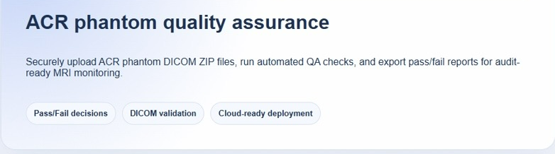

Featured · Placement team project
MRI ACR QA Pipeline
A cloud-ready web app that automates MRI scanner quality checks. I built the image-processing algorithms behind its six ACR QA tests and the dashboard that shows their PASS/FAIL results — backed by 34 automated tests.